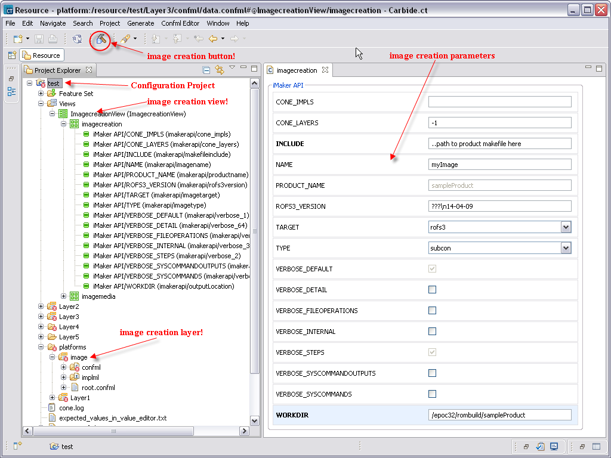

Image creation overview
It is possible to create flashable images straight from Carbide.ct. This is made possible by the integration of Carbide.ct and iMaker tool. iMaker is an image creation tool which provides a simple, standardized and configurable image creation framework.
It is used by Nokia and its sub contractors. iMaker is based on the standardized Make system, and is thus, platform-independent. iMaker uses ConE to convert Configuration Project into target format, which it then includes into flashable image that it creates.
Preconditions for image creation
The following points must be fulfilled in order to create flashable images successfully
- iMaker tool must be installed on the user system. iMaker must have necessary integration with ConE. This means that ConE tool must also exist in the system. These tools usually belong to a build environment or workspace. The workspace must be intact and product images must be creatable succesfully from it.
The workspace can be so called mini environment. Mini environment is a (relatively) small build environment where flashable phone images can be created, similarly to a full SW environment. First version of the renewed minienv functionality is implemented in iMaker 09.06.01.
- A Configuration Project must be open in Carbide.ct. The project and the workspace must be compatible. The Configuration Project must contain image creation layer, which specifies iMaker parameters.
- Image creation parameters must be configured appropriately.
Image creation steps
Follow these steps to create flashable image successfully
- Verify that you have a build environment, with the required tools
- Create a Configuration Project from the environment or if it is already done use it as a basis. Create your Carbide.ct workspace on the same drive as the environment. Import the Configuration Project to Carbide.ct.
- Edit the Configuration Project as you wish
- Make sure that you have image creation layer in your Configuration Project. Fill the image creation parameters in it and in the end press image creation button as shown in the following figure:

Figure 1 Image creation layer
You can follow the creation process from Console view. Once the image creation is finished you can verify the output in the workdir folder that you specified in the image creation layer.